Hauptbuch des Nachbaus
aktualisiert am: 17.10.2026, 03:23 UhrSo sieht der Nachbau aus
Jedes Bild hier hat der Nachbau selbst gezeichnet. Häuser, Möbel, Figuren, Fenster und Schrift kommen aus den Dateien des Originals, nichts ist nachgemalt. Ein Klick zeigt das Bild in voller Größe. Unter jedem Bild steht, an welchem Tag diese Ansicht zum ersten Mal im Nachbau zu sehen war, und wo es einen klar benannten späteren Schritt gibt, auch dessen Tag. Beides ist aus der Geschichte des Projekts abgelesen, nicht aus der Erinnerung.
Die Stadt und ihre Räume

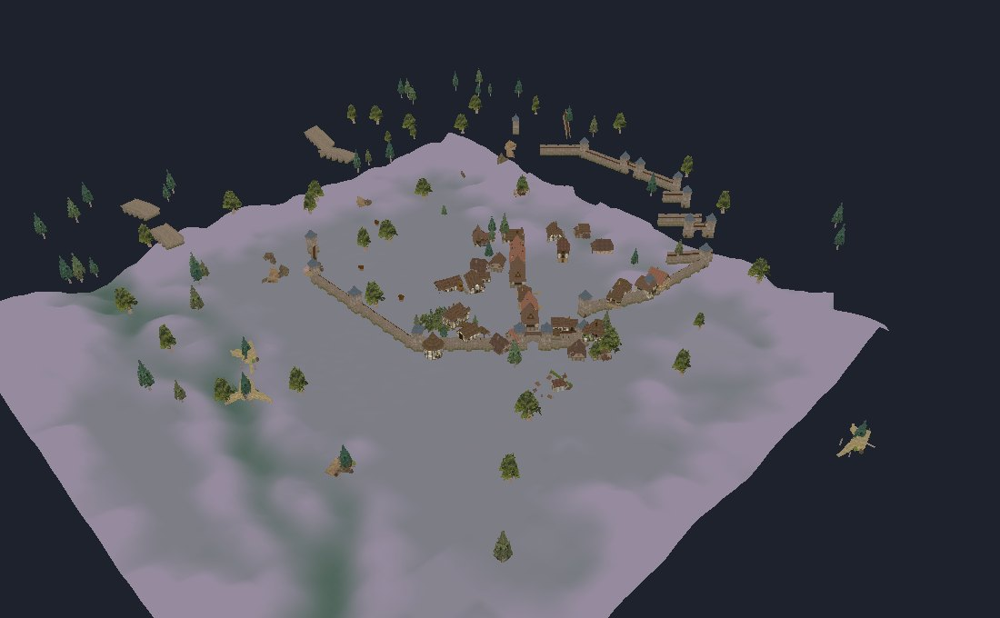
Köln von außenDie ganze Stadt mit Mauerring, Häusern und Wald, gebaut aus der Kölner Karte des Originals. Jedes Haus, jeder Turm und jeder Baum steht da, wo das Original ihn hinstellt, auf dem Boden der Karte — die Brücken über dem Fluss.Zum ersten Mal zu sehen am 21.07.2026aufgenommen am 13.10.2026
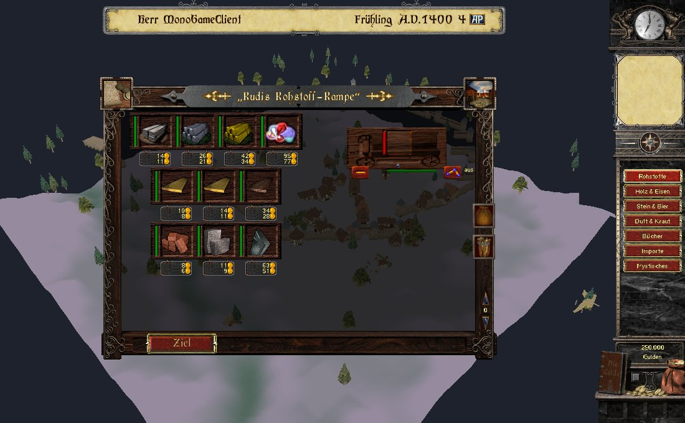
Am MarktstandEin Klick auf einen der sieben Stände in der Stadt öffnet ihn: links seine Waren mit Kaufpreis oben und Verkaufserlös darunter, rechts die eigenen Karren am Markt, und an der Säule wechselt man zwischen den Ständen — Rohstoffe, Holz & Eisen, Bücher und die übrigen.Zum ersten Mal zu sehen am 13.10.2026aufgenommen am 13.10.2026
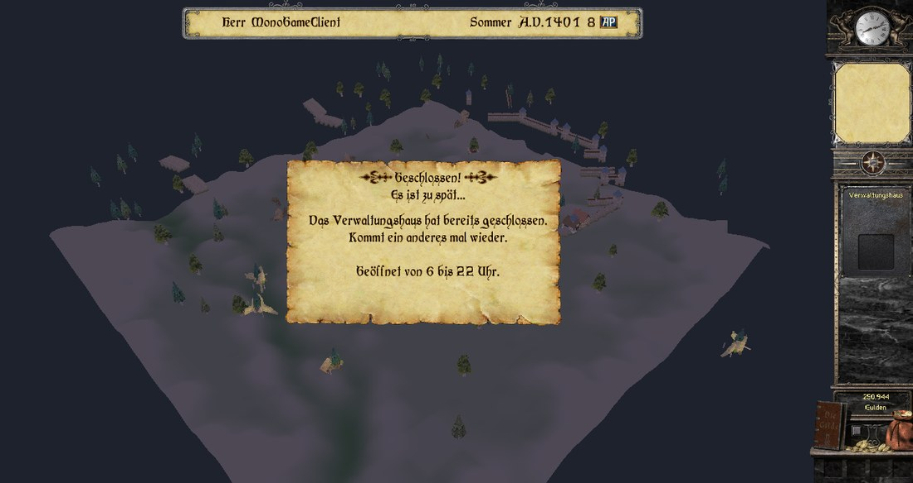
Durch die Stadt gehenEin Klick auf ein Haus in Köln wählt es aus, ein zweiter führt hinein, die rechte Maustaste wieder hinaus — in die eigene Werkstatt, zum Nachbarn, in Kirche und Rathaus. Hier ist es nach Feierabend: Das Rathaus hat zu, und das Spiel sagt es mit den Worten des Originals.Zum ersten Mal zu sehen am 13.10.2026aufgenommen am 13.10.2026
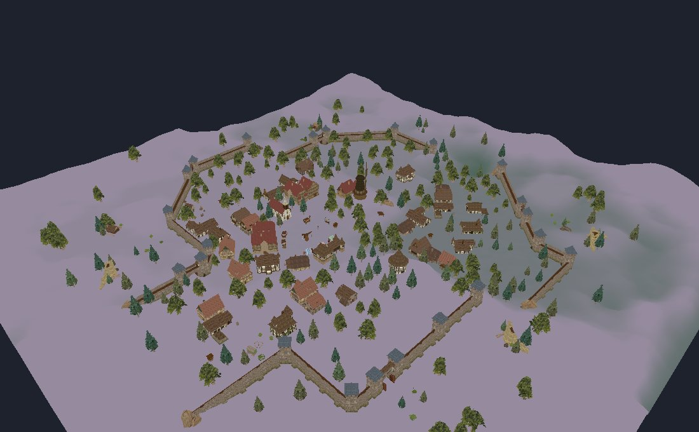
AugsburgEine zweite Stadt des Originals im selben Nachbau. Gespielt wird Köln; die anderen Städte dienen zum Gegenprüfen, weil sie dieselben Dateien mit anderen Zahlen tragen.Zum ersten Mal zu sehen am 04.09.2026aufgenommen am 13.10.2026
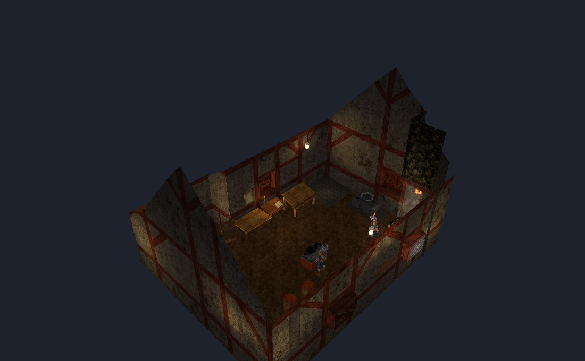
Die SchmiedeEin Handwerksbetrieb von oben, Dach und Decke abgenommen. Im laufenden Spiel gehen die Leute die Arbeitswege, die das Original für diesen Raum vorschreibt.Zum ersten Mal zu sehen am 16.08.2026Die Leute gehen die Arbeitsabläufe des Originals: 17.08.2026aufgenommen am 13.10.2026

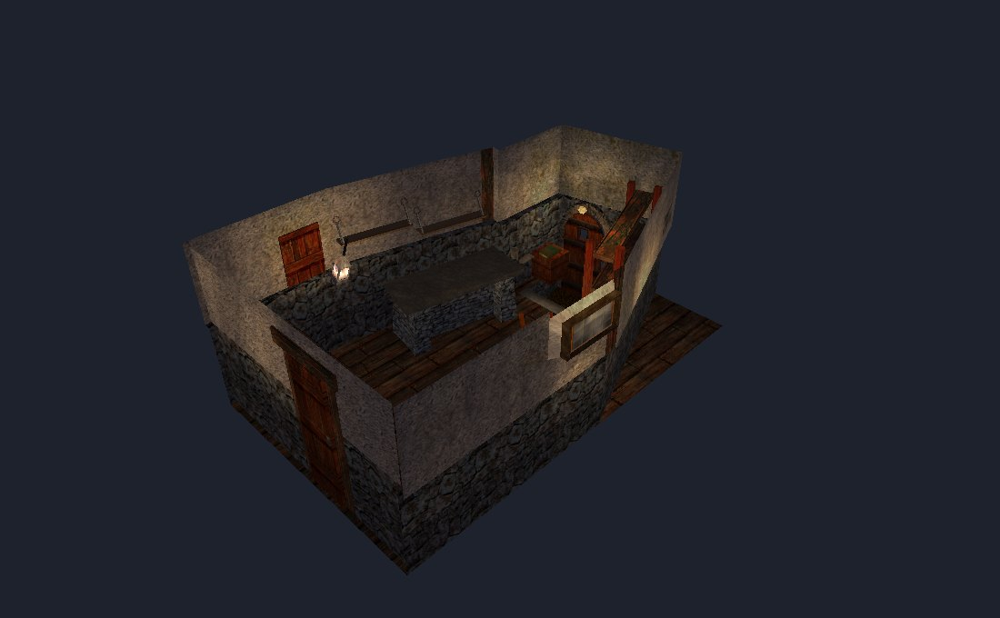
Das Labor des KräuterladensDie rund sechzig Innenräume des Originals stehen im Nachbau, jeder mit seiner ganzen Einrichtung.Zum ersten Mal zu sehen am 06.08.2026aufgenommen am 13.10.2026
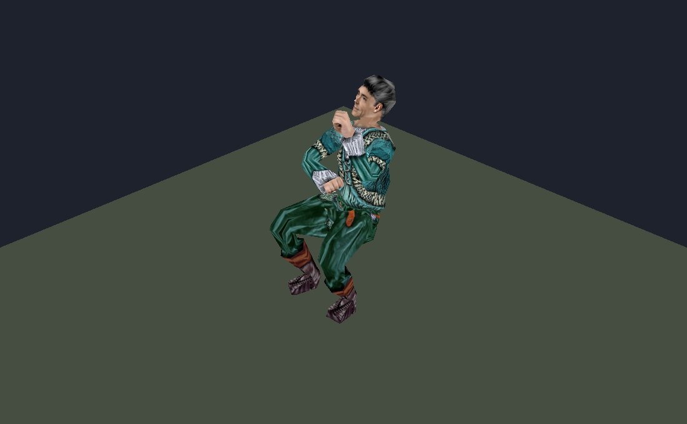
Ein BürgerDie Figuren bewegen sich mit den Bewegungen aus den Spieldateien, Bild für Bild wie im Original.Zum ersten Mal zu sehen am 16.08.2026Das Tempo am Original nachgemessen: 23.09.2026aufgenommen am 13.10.2026
Im eigenen Betrieb

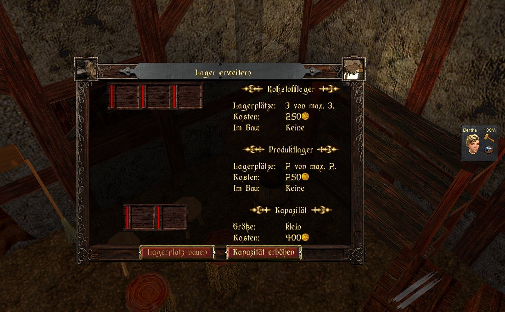
Lager erweiternWie viele Lagerplätze der Betrieb hat, wie groß sie sind und was der nächste kostet.Zum ersten Mal zu sehen am 19.08.2026aufgenommen am 13.10.2026
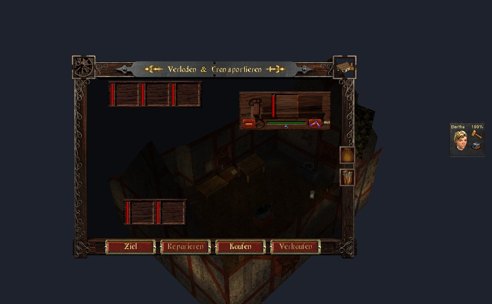
Verladen und TransportierenWaren aus dem Lager auf den Karren laden: Doppelklick nimmt den ganzen Stapel, Ziehen eine bestimmte Menge — wie im Original.Zum ersten Mal zu sehen am 19.08.2026Mengen ziehen wie im Original: 03.10.2026aufgenommen am 13.10.2026

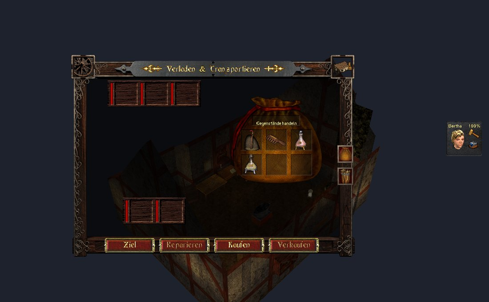
Der BeutelEin Klick auf den Geldsack zeigt, was der Spieler bei sich trägt: Tränke, Bücher und andere Gegenstände.Zum ersten Mal zu sehen am 10.10.2026aufgenommen am 13.10.2026
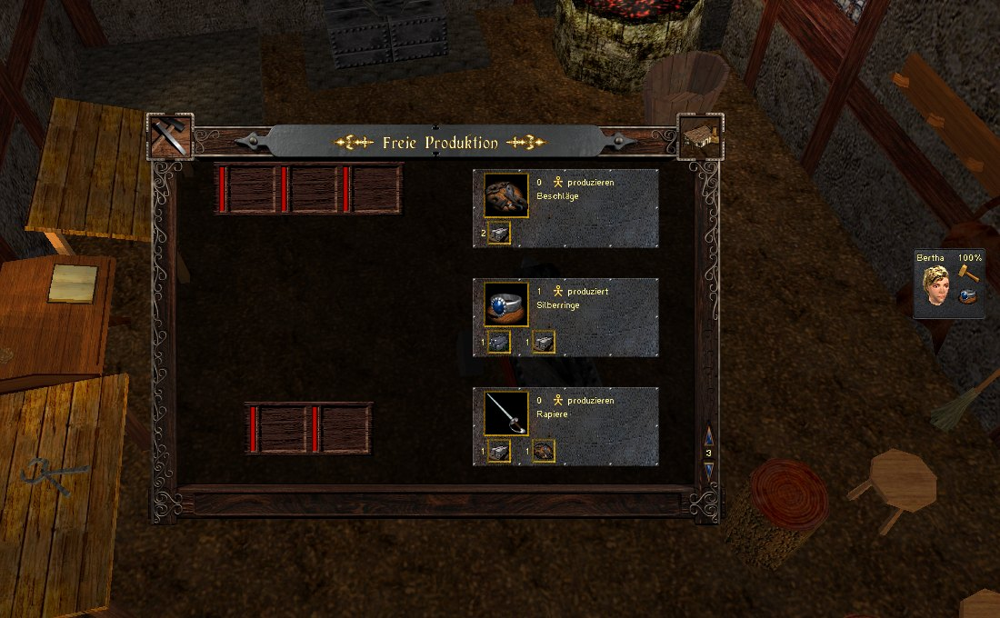
Freie ProduktionDie Werkbank: was der Betrieb herstellen kann und welche Zutaten es dafür braucht.Zum ersten Mal zu sehen am 19.08.2026aufgenommen am 13.10.2026
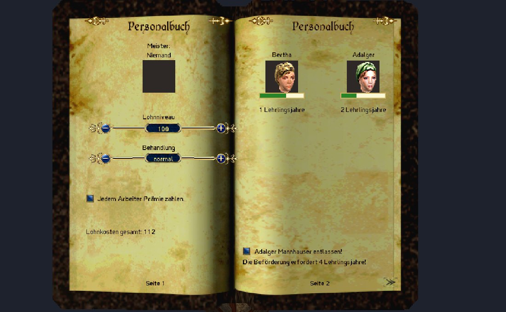
Das PersonalbuchDie Belegschaft mit Bildnis, Lehrjahren und Lohn. Wer vier Lehrjahre hat, kann befördert werden.Zum ersten Mal zu sehen am 22.08.2026Entlassen und befördern per Klick aufs Bildnis: 03.10.2026aufgenommen am 13.10.2026

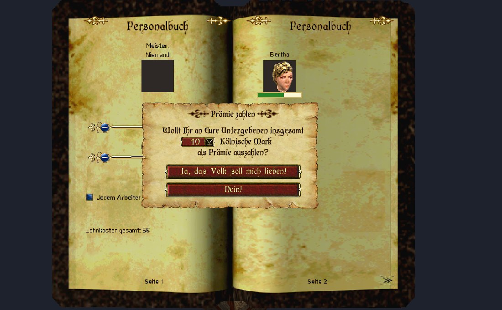
Eine Prämie für alleJedem Arbeiter eine Prämie zahlen — das Spiel fragt mit denselben Worten wie das Original.Zum ersten Mal zu sehen am 03.10.2026aufgenommen am 13.10.2026
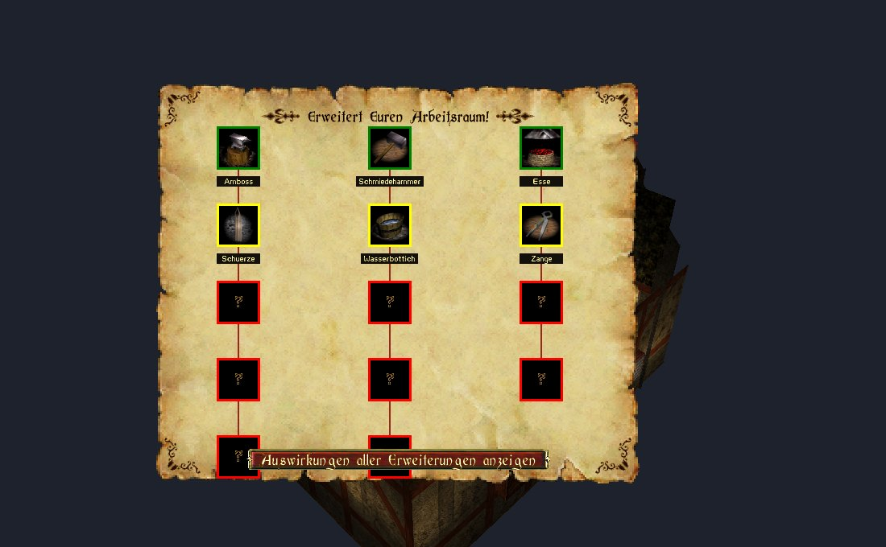
Der AusbaubaumWelche Einrichtung der Arbeitsraum als Nächstes bekommen kann; jede Kachel ist ein Ausbau aus dem Original.Zum ersten Mal zu sehen am 23.08.2026aufgenommen am 13.10.2026
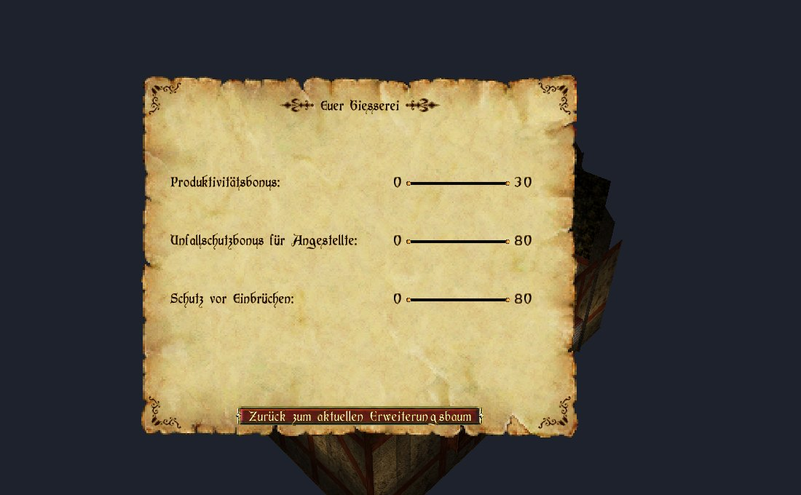
Was die Ausbauten bringenMehr Arbeitstempo, weniger Unfälle, Schutz vor Einbrechern — zusammengezählt über alle Ausbauten.Zum ersten Mal zu sehen am 23.08.2026aufgenommen am 13.10.2026
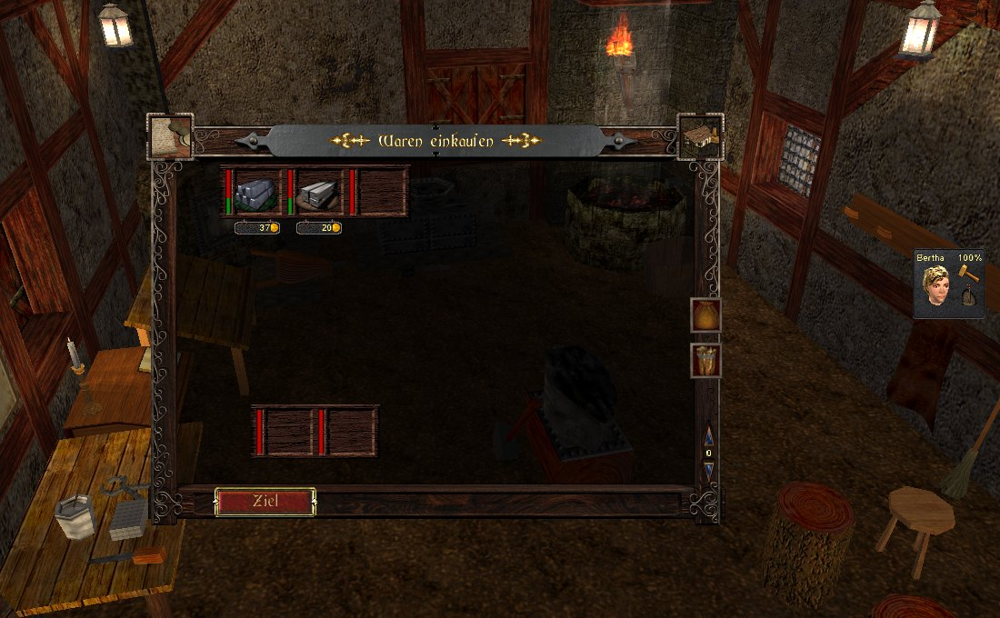
Beim Nachbarn einkaufenIm Betrieb eines anderen kauft man aus seinem Warenlager — nur die fertigen Waren, nicht die Rohstoffe.Zum ersten Mal zu sehen am 23.08.2026aufgenommen am 13.10.2026
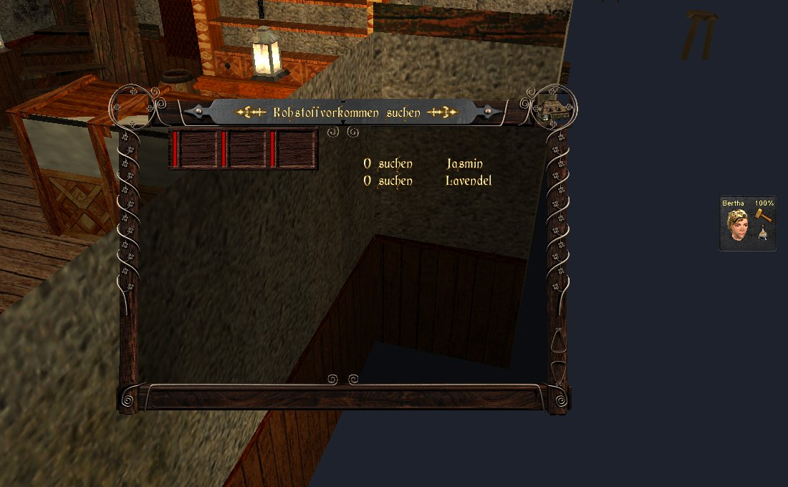
Rohstoffe sammelnDer Kräuterladen schickt seine Leute Jasmin und Lavendel suchen, bezahlt mit Arbeitszeit statt mit Geld.Zum ersten Mal zu sehen am 03.09.2026aufgenommen am 13.10.2026
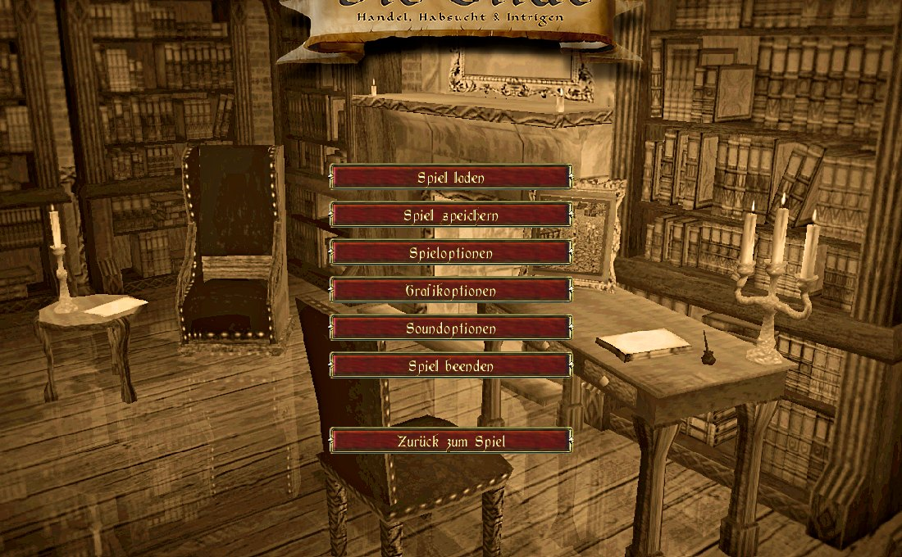
Das PausemenüLaden, Speichern und die Optionen.Zum ersten Mal zu sehen am 22.08.2026aufgenommen am 13.10.2026
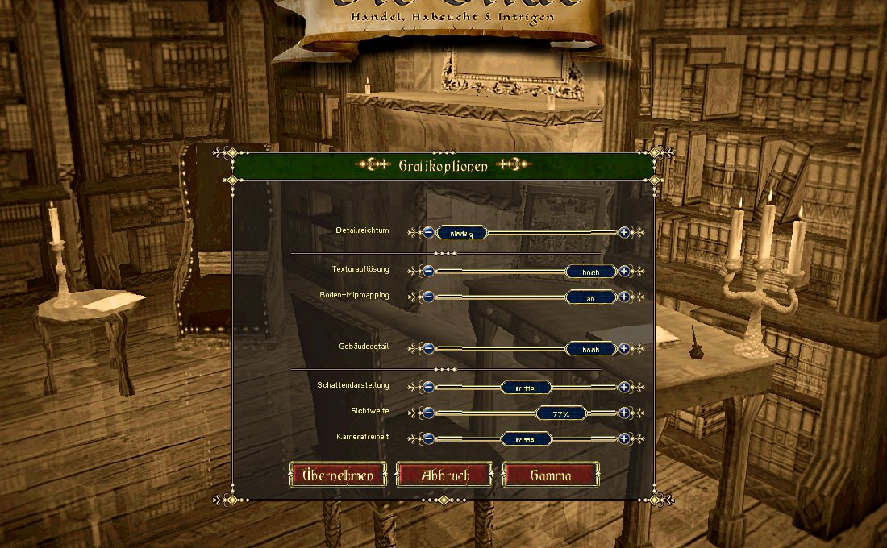
Die GrafikoptionenDie Regler des Originals; der Nachbau beginnt mit denselben Werten, die das Spiel bei der Installation setzt.Zum ersten Mal zu sehen am 22.08.2026Die Startwerte der Installation: 03.10.2026aufgenommen am 13.10.2026
Stadt, Kirche, Tod und Teufel

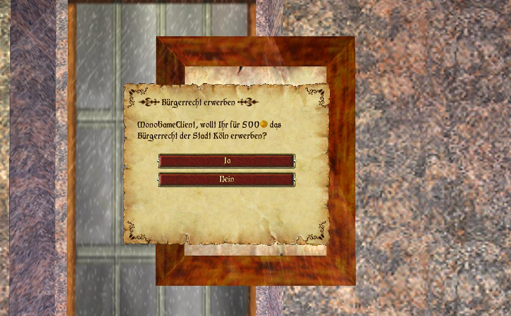
Das BürgerrechtWer ein Amt will, braucht erst das Bürgerrecht. Hier bietet die Stadt es zum Kauf an.Zum ersten Mal zu sehen am 10.10.2026aufgenommen am 13.10.2026
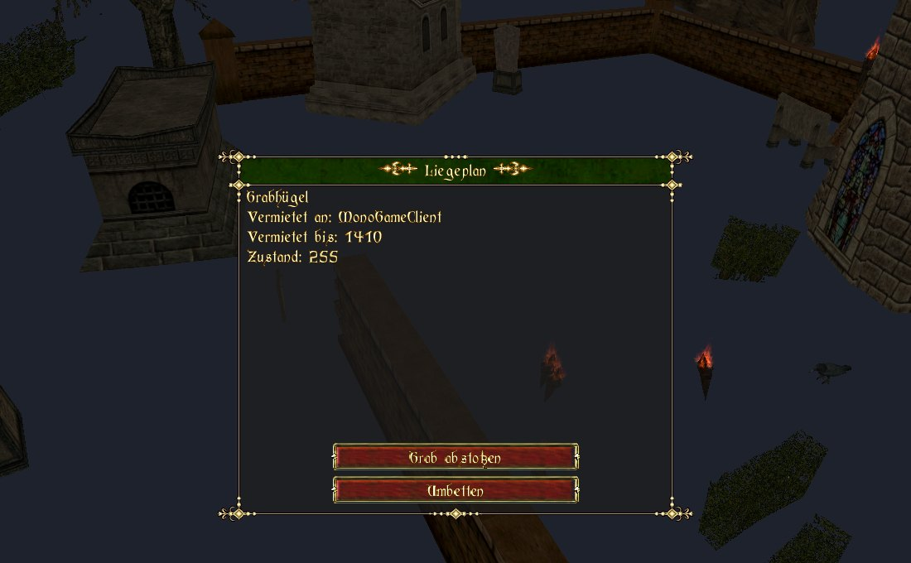
Das FamiliengrabDer Liegeplan des Friedhofs: wer das Grab gemietet hat und bis wann. Von hier aus läßt sich umbetten.Zum ersten Mal zu sehen am 04.09.2026aufgenommen am 13.10.2026
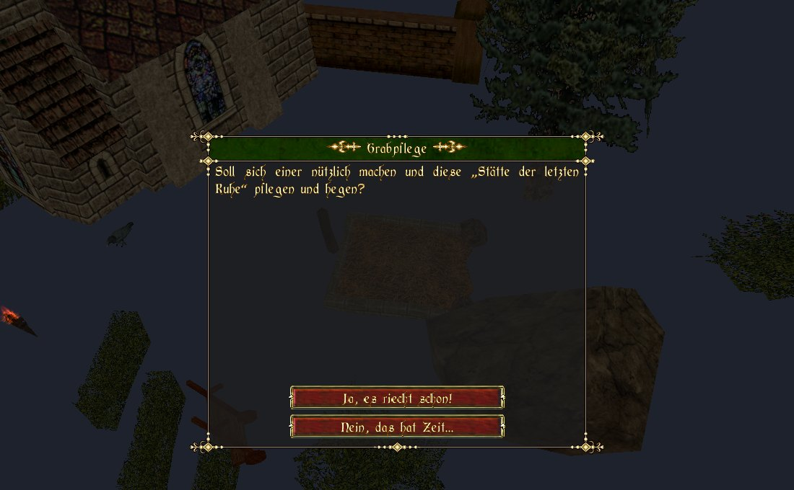
GrabpflegeEin Gehilfe des Friedhofs kann eine Grabstätte pflegen.Zum ersten Mal zu sehen am 03.09.2026aufgenommen am 13.10.2026
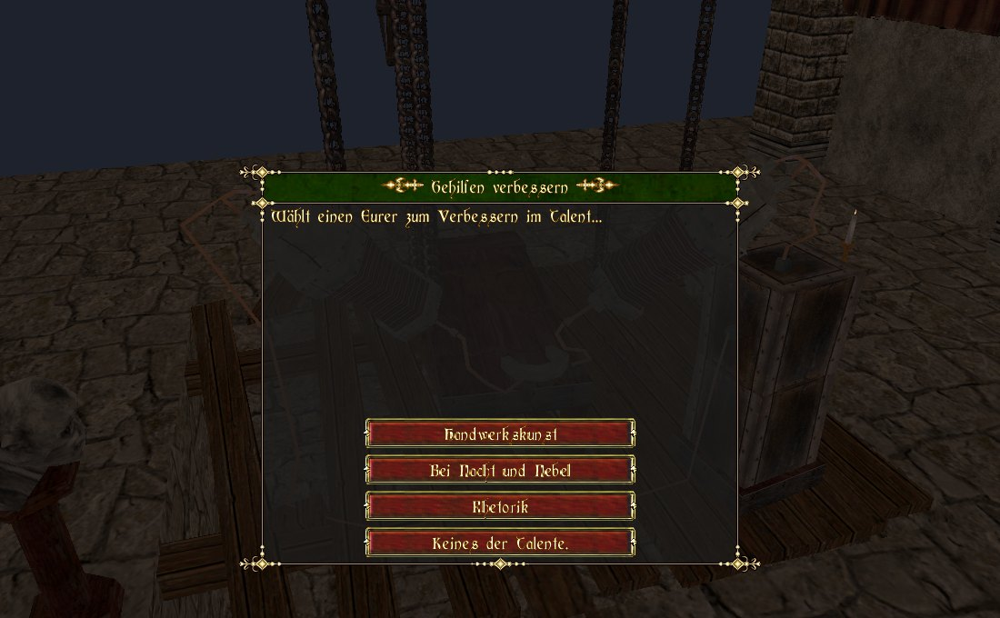
Gehilfen verbessernIm Turm des Nekromanten lernt ein Gehilfe ein Talent: Handwerkskunst, Bei Nacht und Nebel oder Rhetorik.Zum ersten Mal zu sehen am 03.09.2026aufgenommen am 13.10.2026
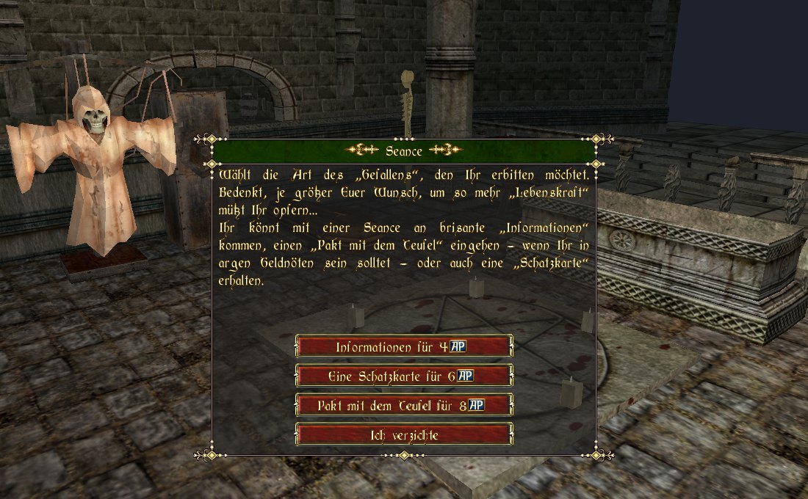
Die SéanceIn der Krypta: Informationen, eine Schatzkarte oder ein Pakt mit dem Teufel — bezahlt mit Lebenskraft.Zum ersten Mal zu sehen am 04.09.2026Die Knöpfe nennen ihre Kosten: 03.10.2026aufgenommen am 13.10.2026

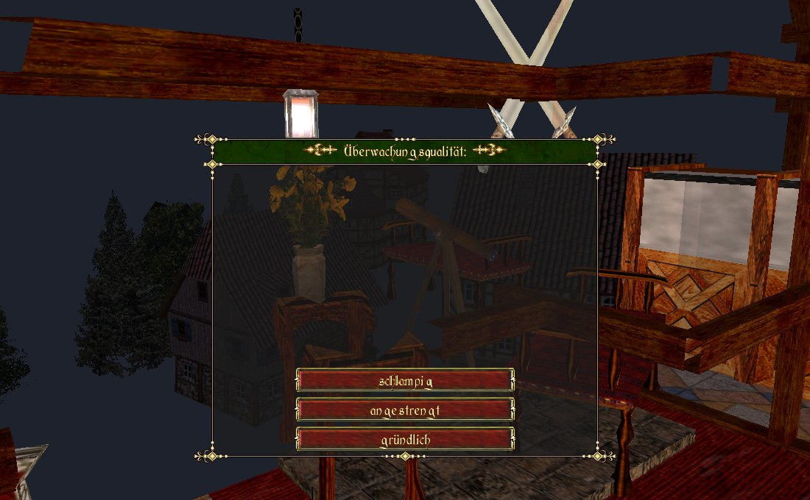
Das GeheimkabinettWie gründlich die Spione der Gegner aufgespürt werden sollen.Zum ersten Mal zu sehen am 03.09.2026aufgenommen am 13.10.2026
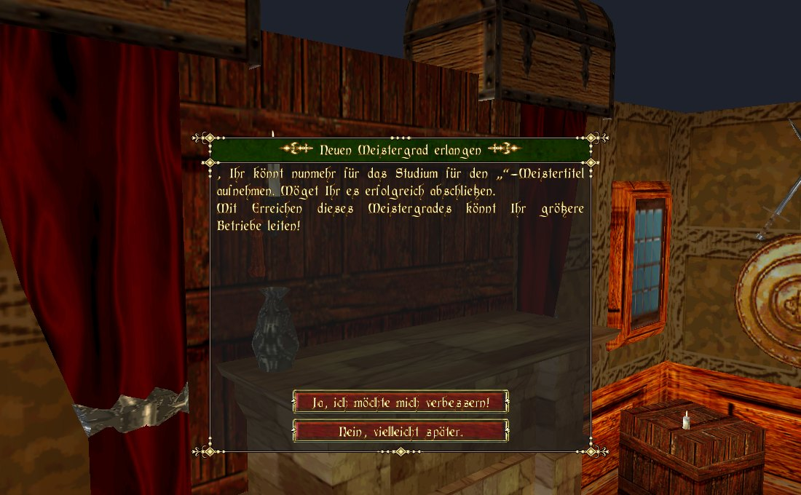
Die MeisterprüfungIm Arbeitszimmer: das Studium für den nächsten Meistertitel, mit dem man größere Betriebe leiten darf.Zum ersten Mal zu sehen am 04.09.2026aufgenommen am 13.10.2026